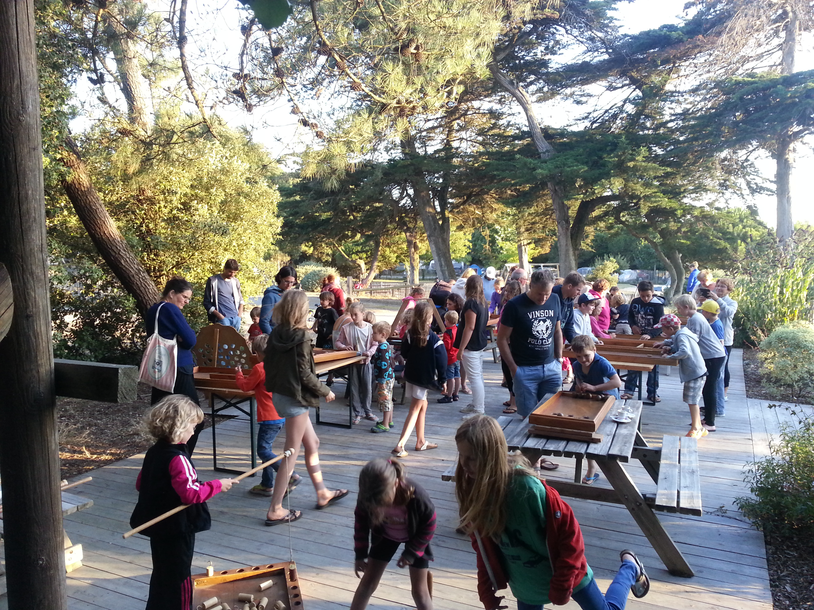
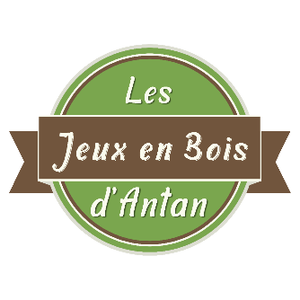
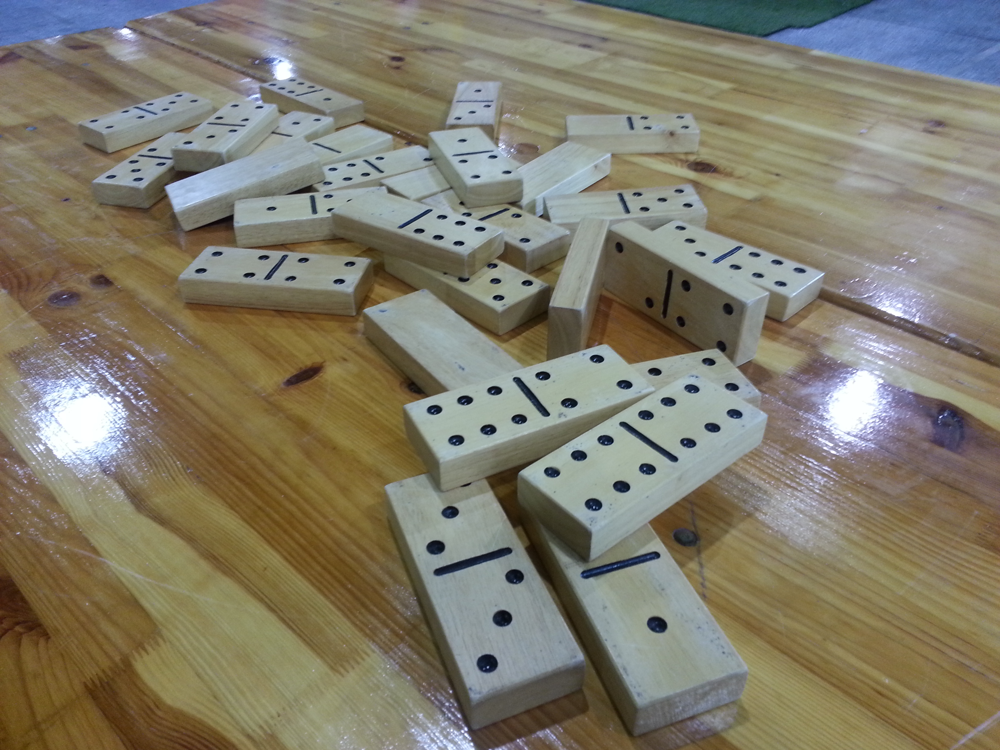
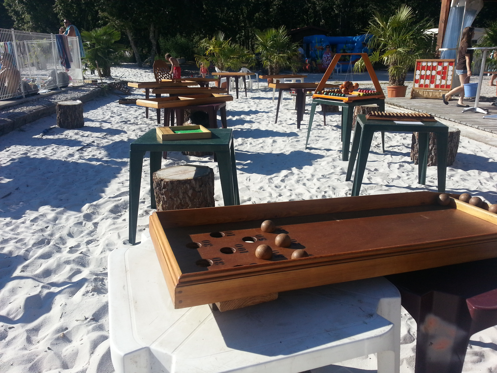
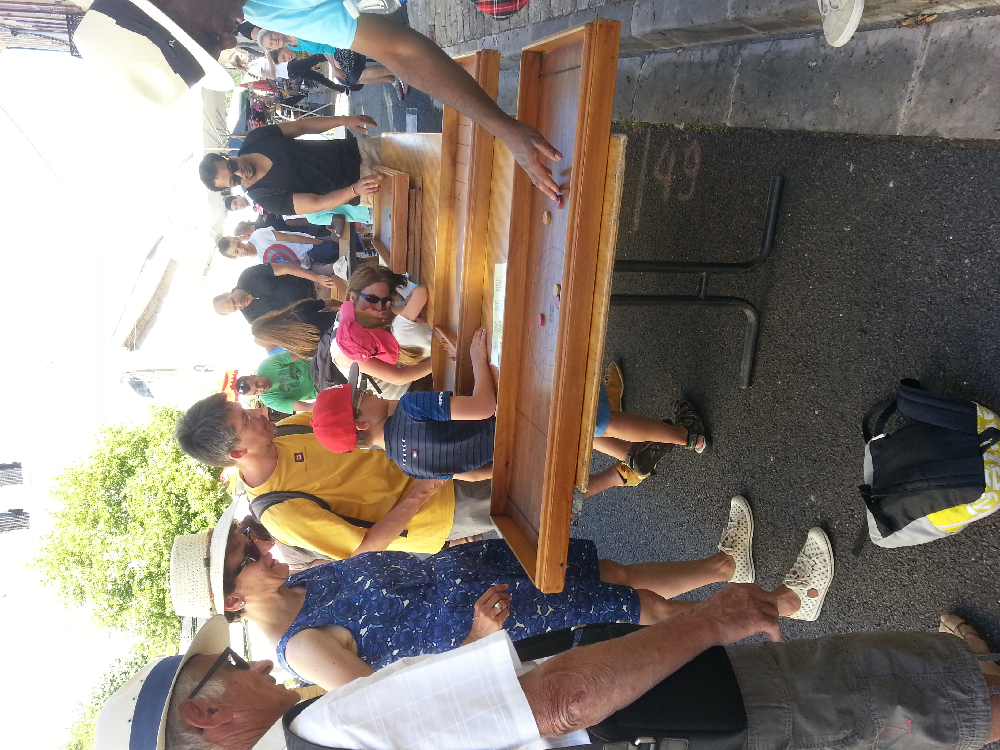

Animation jeux en bois
Des animations encadrées, conviviales et intergénérationnelles en Gironde et Aquitaine. Des jeux accessibles, une ambiance chaleureuse, et des souvenirs garantis !

JEB Les Jeux en Bois d'AntanJeux en Bois d'Antan · Gironde (33) · Bordeaux & Aquitaine
Animation & location de jeux en bois en Gironde, Bordeaux et toute l'Aquitaine
Depuis plus de 20 ans, je fais jouer petits et grands avec des jeux en bois traditionnels, aussi simples qu'addictifs ! Ici, pas d'écran : on rit, on se défie, on coopère et surtout… on partage.
Anniversaires, mariages, fêtes de village, événements d'entreprise… Mes animations de jeux en bois s'adaptent à toutes les occasions et à tous les publics, dans le 33 et toute l'Aquitaine.

Des animations encadrées, conviviales et intergénérationnelles en Gironde et Aquitaine. Des jeux accessibles, une ambiance chaleureuse, et des souvenirs garantis !

Une sélection de jeux d'antan authentiques : dominos géants, palets bretons, molkky, jeu de quilles… Des jeux aussi simples qu'addictifs qui rassemblent petits et grands.

Des prestations de location thématiques sur mesure, pensées pour s'adapter à l'ambiance, au public et aux objectifs de chaque événement en Gironde.

Offrez à vos invités un moment de convivialité unique. Les jeux en bois d'antan créent une ambiance chaleureuse et intergénérationnelle idéale pour votre jour J.
Basé en Gironde (33), j'interviens à Bordeaux et dans toute la Nouvelle-Aquitaine pour animer vos mariages, événements d'entreprise et fêtes de famille.
"L'authenticité du jeu, la magie du bois"
Depuis plus de 20 ans, je fais vivre des moments de partage et de convivialité à travers l'animation de jeux en bois traditionnels. Passionné par cet univers authentique, j'ai développé au fil des années une expertise solide dans la mise en place d'espaces ludiques adaptés à tous les publics.
Mon parcours m'a permis d'intervenir dans des contextes très variés : événements privés, fêtes de village, animations scolaires, manifestations d'entreprise, mariages ou encore festivals. Cette diversité d'expériences me permet aujourd'hui de proposer des prestations sur mesure, toujours pensées pour s'adapter à l'ambiance, au public et aux objectifs de chaque événement.
Les jeux en bois que je propose ont un point commun essentiel : ils rassemblent. Accessibles à tous, des plus jeunes aux plus âgés, ils favorisent les échanges, la complicité et le plaisir simple de jouer ensemble.
Vous organisez un événement en Gironde, à Bordeaux ou en Aquitaine et souhaitez proposer des jeux en bois d'antan à vos invités ? J'interviens pour tous types d'événements : anniversaires, mariages, événements d'entreprise et événements pour particuliers. Pour chaque occasion, je propose des formules adaptées à vos besoins et à votre budget.
Location de jeux en bois pour vos anniversaires, fêtes entre amis et réunions de famille. Une animation conviviale et intergénérationnelle pour des souvenirs inoubliables.
Créez une ambiance chaleureuse et intergénérationnelle pour votre jour J. Des jeux qui rassemblent tous vos invités, des plus jeunes aux plus âgés.
À partir de 300 €
Séminaires, team building, soirées d'entreprise… Renforcez la cohésion de vos équipes autour de jeux simples et conviviaux.
À partir de 450 €
Anniversaires, fêtes de famille, réunions entre amis… Partagez des moments authentiques et inoubliables avec vos proches.
À partir de 100 €
Ce que disent nos clients — Gironde & Aquitaine
★★★★★Une animation qui a ravi tout le monde, des enfants aux grands-parents ! Philippe est professionnel, jovial et les jeux en bois sont de très belle qualité. Je recommande vivement pour un mariage.
★★★★★Animation parfaite pour notre séminaire d'entreprise à Bordeaux. Les équipes ont adoré se retrouver autour de jeux simples et conviviaux. Un vrai moment de cohésion. Philippe est à l'écoute et très pro !
★★★★★Nous avons fait appel à Philippe pour notre anniversaire de mariage en famille. Petits et grands ont joué pendant des heures ! L'installation était impeccable, Philippe est souriant et vraiment passionné. Merci !
★★★★★Nous avons fait appel à JEB pour notre fête de village et c'était un vrai succès. Les jeux en bois ont créé une ambiance conviviale et intergénérationnelle. Philippe est très à l'écoute, ponctuel et le matériel est de qualité.
★★★★★Idée parfaite pour notre mariage ! Nos invités ont passé un excellent moment. Les jeux en bois sont beaux, solides et Philippe sait mettre tout le monde à l'aise. Je recommande les yeux fermés pour tout événement en Gironde.
Tout ce que vous devez savoir avant de réserver
Nous créons des moments conviviaux et authentiques grâce à des jeux en bois traditionnels. Parfait pour rassembler toutes les générations lors de vos événements à Bordeaux et en Gironde.
Nous intervenons pour tous types d'événements : mariages, anniversaires, fêtes de village, événements d'entreprise, écoles et festivals dans toute la Gironde et l'Aquitaine.
Oui ! Nous proposons la location de jeux en bois à Bordeaux et alentours, avec ou sans animateur selon vos besoins et votre budget.
Nous adaptons nos formules à votre événement : petit lot de jeux pour une animation intimiste ou grande sélection pour accueillir un large public.
Absolument ! Nos jeux sont intergénérationnels : enfants, adultes et seniors peuvent jouer ensemble et partager un moment unique.
Oui, nos jeux en bois sont très appréciés pour les mariages à Bordeaux et en Gironde. Ils créent une ambiance chaleureuse et occupent vos invités tout au long de la journée.
Oui, nous proposons des animations idéales pour les team-buildings, séminaires et événements professionnels, favorisant la cohésion et la bonne humeur.
Nous nous adaptons à votre lieu (intérieur ou extérieur). Avant l'événement, nous vous conseillons pour optimiser l'espace et garantir une animation fluide.
Oui, nous gérons la livraison, l'installation et le rangement des jeux en Gironde pour que vous profitiez pleinement de votre événement sans stress.
C'est simple : contactez-nous via le formulaire en indiquant la date, le lieu et votre événement. Nous vous envoyons rapidement un devis personnalisé et gratuit.